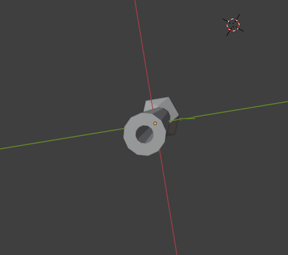
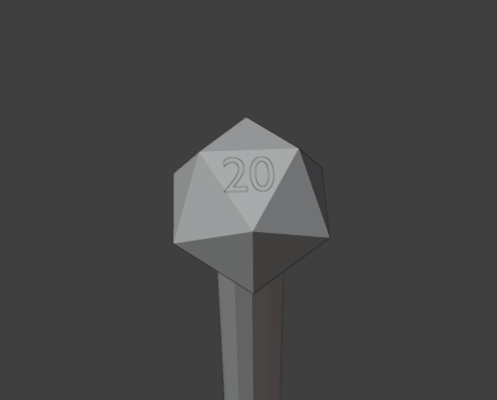
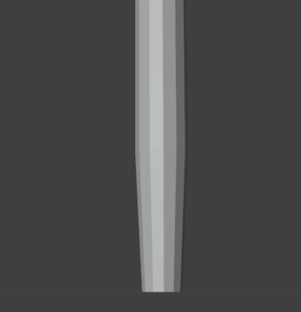
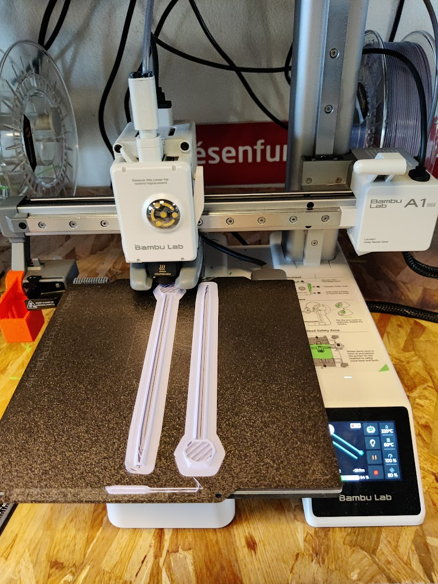
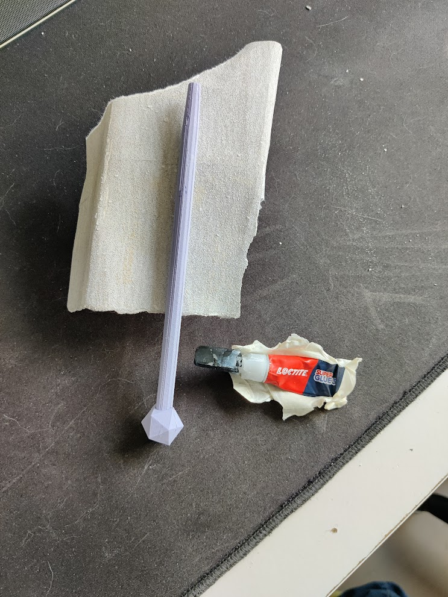

Overview
In the circumstances of the A4 How To Make (Almost) Anything class,
I had to design and print a 3D object, either a pen or a whistle, I chose to make a pen with a RPG D20 on top
Process
Learn Blender
Due to some frustration about the licences of SOLIDWORKS last year,
I decided to pickup an open source 3D software: blender
so the prerequisite is to learn some blender aka 1h20 of blender guru tutorials
Measuring
The 1st step is to measure the dimensions of the standard bic pen using a ruler:
- the base of the ink container is 4mm wide
- the base of the point is 5 mm wide
- the pen itself is 8mm wide and 13.5mm high
Modelling
started by putting toggether a cylinder and a geode to make up the basic idea,
making sure to adjust for the measurements, I want the pen to be 17cm high
after some struggling, add a pen hole by extruding the volume (4mm wide)
added the 20 on top of the dice using the text object and clipping it on the surface of the dice using the magnet tool
and a bevel to make the tip of the pen, leaving the very end of the tip 1mm thick
Print time
using orcaslicer, we cut the pen in half for printing,
otherwise supports could be printed inside the pen wich isn't ideal
Then let the printer do it's magic
When the print is done, remove the supports to get the full piece
Assembling and sanding
Since the penpoint couldn't fit in the printed pen as is,
some sanding was necessary using sandpaper
stick the two parts together, sand the contour and voila. The pen is done :D
